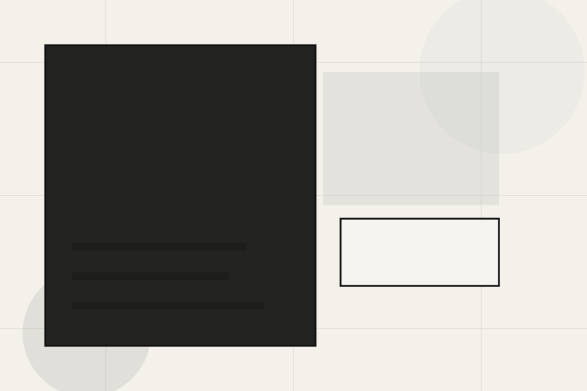
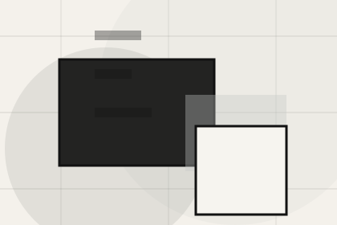
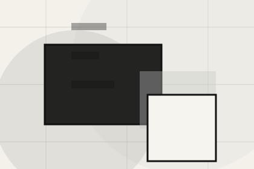
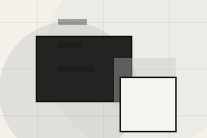
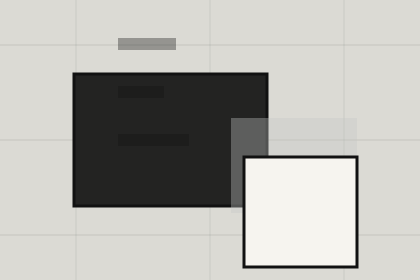

Start
How visitors begin this route and what detail is useful at the first step.
Questions / 01
Questions opens as a clear architecture decision hub: what Craft offers, who it helps, why it matters, and which route to take first.
The first screen combines positioning, proof, primary action, and fast internal navigation, so people can act immediately or compare the rest of the questions route with context.
Minimal full-bleed project hero
Select the closest route and Craft keeps the next step, proof, and follow-up expectation aligned with taste and design authority.

Questions / 03
Timelines explains the operating sequence so visitors can see how the first request becomes a clear recommendation and follow-up.
The steps are written from the visitor side: what they do first, what Craft clarifies, what they receive, and how support continues.
Explore QuestionsHow visitors begin this route and what detail is useful at the first step.
Questions / 04
Fees makes commercial comparison easier by showing fit, scope, and terms before architecture visitors ask for the next step.
The layout keeps price-sensitive decisions honest: it separates starting scope, fuller delivery, and ongoing support so the visitor can ask a sharper question.
View PricingWho the offer is for, which scope it suits, and when a different route may be better.
What is included clearly enough for architecture, planning & built environment visitors to compare value without hidden jargon.

The practical details that should be confirmed before someone asks to discuss the project.
Who the offer is for, which scope it suits, and when a different route may be better.
ScopedWhat is included clearly enough for architecture, planning & built environment visitors to compare value without hidden jargon.
QuotedThe practical details that should be confirmed before someone asks to discuss the project.
RetainerQuestions / 05
Revisions handles buying doubts directly so visitors can understand timing, fit, limits, and the safest next step.
Answers are short by design: enough to remove hesitation, not so much that the page turns into documentation before the visitor can act.
Explore QuestionsRevisions gives the page a specific angle instead of repeating the navigation label.
The architectural index cards show what to compare, what to avoid, and what matters most for architecture, planning & built environment visitors.
The final cue points to a useful internal route so the section keeps the journey moving.
Questions / 06
Role handles buying doubts directly so visitors can understand timing, fit, limits, and the safest next step.
Answers are short by design: enough to remove hesitation, not so much that the page turns into documentation before the visitor can act.
Explore QuestionsRole gives the page a specific angle instead of repeating the navigation label.
The architectural index cards show what to compare, what to avoid, and what matters most for architecture, planning & built environment visitors.
The final cue points to a useful internal route so the section keeps the journey moving.
Questions / 07
Consultants handles buying doubts directly so visitors can understand timing, fit, limits, and the safest next step.
Answers are short by design: enough to remove hesitation, not so much that the page turns into documentation before the visitor can act.
Explore QuestionsConsultants gives the page a specific angle instead of repeating the navigation label.
The architectural index cards show what to compare, what to avoid, and what matters most for architecture, planning & built environment visitors.
The final cue points to a useful internal route so the section keeps the journey moving.
Questions / 08
Documents handles buying doubts directly so visitors can understand timing, fit, limits, and the safest next step.
Answers are short by design: enough to remove hesitation, not so much that the page turns into documentation before the visitor can act.
Explore QuestionsDocuments gives the page a specific angle instead of repeating the navigation label.

The architectural index cards show what to compare, what to avoid, and what matters most for architecture, planning & built environment visitors.
The final cue points to a useful internal route so the section keeps the journey moving.
Questions / 09
Support explains the practical scope, best-fit situations, and expected outcome so architecture visitors can compare options without decoding jargon.
The section keeps the offer concrete: what is included, who it is best for, what decision it supports, and which linked route gives the deeper detail.
Open ContactWho should use support and when it belongs in the questions journey.
The practical benefit visitors should expect after choosing this route.

Where to compare details, pricing, support, or contact options before committing.
Questions / 10
Craft closes the questions route with a clear action, a quick reminder of the value, and a low-friction way to discuss the project.
Visitors who are ready can use the primary action. Visitors who are still comparing can scan the section links, proof, and support routes before they discuss the project.
Discuss ProjectThe final block keeps the choice simple: act now, compare one more proof route, or send enough detail for a focused response.
Discuss Projecttaste and design authority
A spatial portfolio site with minimal chrome, full-bleed project moments, thin metadata, and studio enquiry. Questions ends with a direct path to discuss the project, plus enough context for visitors who still need to compare.

Discuss ProjectInformation is provided for planning and should be reviewed for the final client, location, and operating rules.